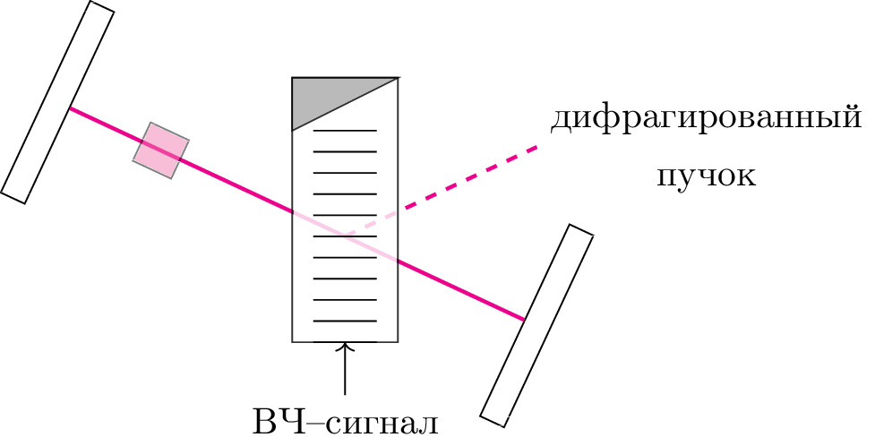

pre.tex
\documentclass[tikz]{standalone}\input{pre.tex}\begin{document}\begin{tikzpicture}
\xdef\darkness{0}
\xdef\opa{0.2}
\xdef\SIZE{6}
\xdef\setka{0}
\input{setka}
\coordinate (rot) at (3,3);
\begin{scope}[rotate around={-25:(rot)}, every node/.style={rotate=-25}]
\node [draw, shape=rectangle, fill=white, minimum width=0.25cm, minimum height=2cm, anchor=center] at (0,3) (res1) {};
\node [draw, shape=rectangle, fill=white, minimum width=0.25cm, minimum height=2cm, anchor=center] at (5,3) (res2) {};
\coordinate (envplace) at ($(res1.east)!0.2!(res2.west)$);
\coordinate (polplace) at ($(res1.east)!0.5!(res2.west)$);
\coordinate (pokplace) at ($(res1.east)!0.8!(res2.west)$);
\draw[line width=1pt,magenta]
(res1.east) -- (res2.west)
;
\node [draw, shape=rectangle, fill=magenta!65, opacity=0.5, minimum width=0.4cm, minimum height=0.4cm, anchor=center] at (envplace) (env) {};
\end{scope}
\draw[line width=1pt,magenta, dashed] (3,3) -- ++(25:2) node[right, black, , align=center] {дифрагированный \\ пучок};
\draw[fill=white, opacity=0.8] (2.5,2) rectangle (3.5,4.5);
\draw[fill=black!40, opacity=0.8] (3.5,4.5) -- (2.5,4) -- (2.5,4.5) --cycle;% rectangle (2.5,4.5);
\draw[->] (3,1.5) node [below, align=center] {ВЧ--сигнал} -- (3,2);
\foreach \i in {2,2.2,...,4.1} {
\draw (2.5+0.2,\i) -- (3.5-0.2,\i);
}
\end{tikzpicture}\end{document}